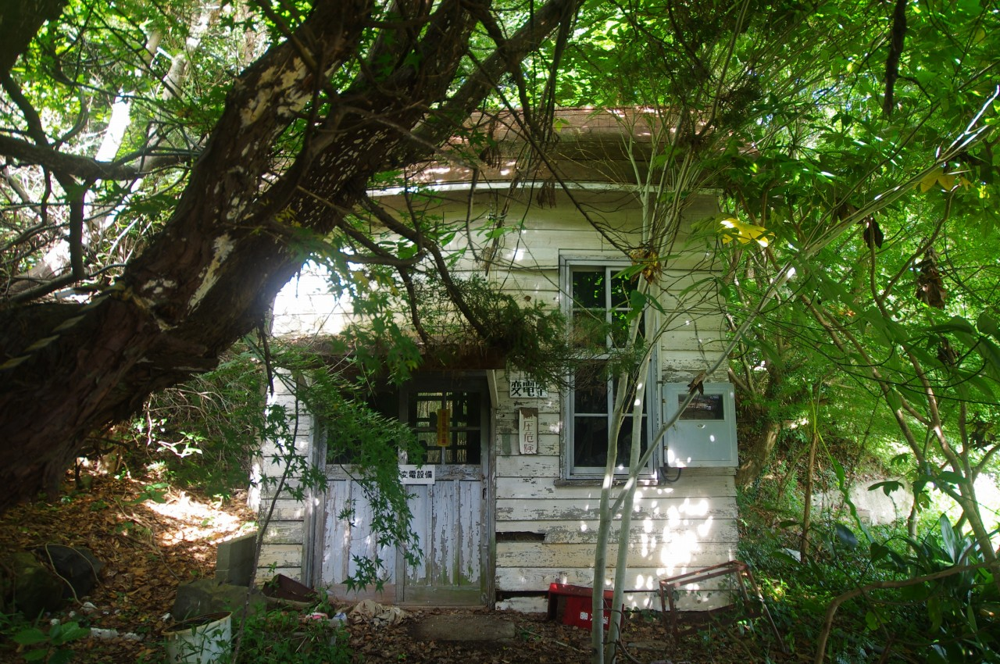

屋島ケーブル
2019年8月訪問。
屋島登山口と屋島山上を結ぶケーブルカー。2004年に休止、翌年に廃止となった。 現在、登山口側の駅舎は解体されており、ホームと車両、変電設備が残っている。保存に向けた取り組みは行われているようで2015年に錆落としと再塗装が行われた。ただし、その後の動きは見られず放置状態である。

反対側へ回ってみよう。

約800mで山上らしい。律儀にローマ字も書かれているが「TOZANGUCHI」で伝わるのか？

奥を見ると何やら怪しい小屋がある。

変電室のようだ。それにしては可愛らしい造りをしている。

錆び固まったパンタグラフ。もう二度と電気が流れることはないだろう。

さて、車両に乗り込もう。

車両は少し傾いている。

運転台は思っていたよりも簡素なものだった。


山側の運転台。本来連結するはずのなかった相方とくっつけられている。前面だけは現役時の塗装を保っているようだ。

そろそろ降りて奥へ進んでみよう。2両繋げられているのでホームからははみ出した状態で停車している。

車両を引っ張っていたケーブルは取り外されている。

これは信号機だろうか。ここはもう二度と列車が走ることはない線路。

線路は草が伸び放題だ。虫も集ってくる。